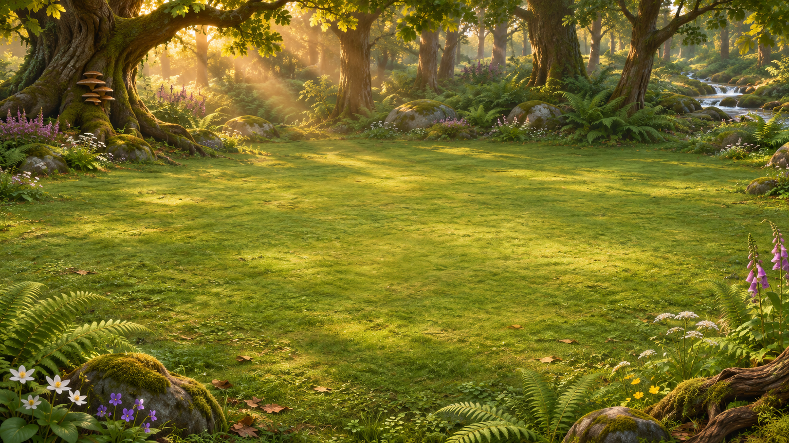

Dein Lehrer/deine Lehrerin vergisst, dass sie dir Hausaufgaben geben wollte.
EURE MAGISCHE WALDLICHTUNG
Leise werden.
Wunder entdecken.
Zehn Tiere. Ein besonderer Besuch.
Und eure Ruhe macht es möglich.
BEREIT FÜR EURE RUHENoch keine Messung

Bilder werden noch geladen. Bitte kurz warten oder die Seite neu laden.
Die Lichtung wartet auf euch.
Startet das Mikrofon oder entdeckt den Demomodus.
Nächstes Tier
–